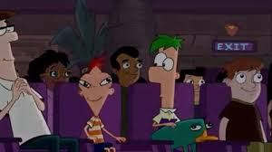
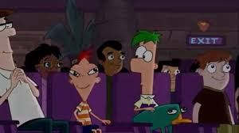

About Me
Hi! My name is Alyssa McCormick. I am 16 years old and I go to Cab Calloway School of the Arts where I am a digital media major. I was born in Delaware where I have lived my entire life. Ever since I was young, I have been involved in a variety of sports, with only a few that I have remained to play, being swimming, dance, and crew. Along with sports, in my free time I enjoy watching TV, sleeping, and spending time with my family. In the future I hope to travel the globe, get married, and have many children. Click here to see my resume.
Childhood
I began playing sports when I was about 3 years old. I began dancing at that age and I still dance today. I also began playing soccer at age 3 where I played for 4 years. Next, I began swimming when I was 4, and I am also still swimming today. I started playing softball when I was 6 and I played for 6 years. I began volleyball at 9 and played for 5 years. I also began playing basketball when I was 9 which I played for 2 years. Lastly, I began crew when I was 15 and i am still doing that today.
Family
I am the youngest child of 3. I have a sister 1 year older than me named Mallory and a brother 3 years older than me named Jake. My mother’s name is Jill and my father’s name is Michael. I have a cat named Chase that is 8 years old. My family is very supportive of me and they cheer me on no matter what I’m doing in life.